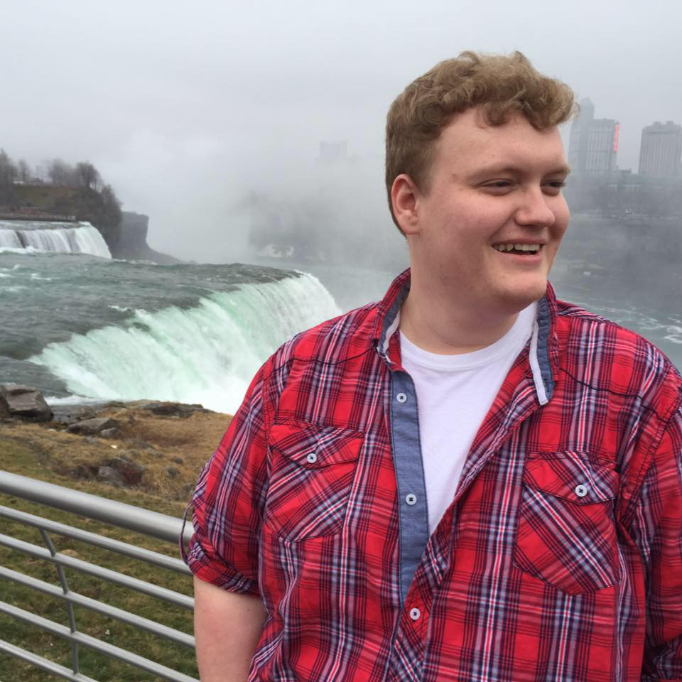
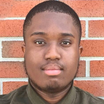
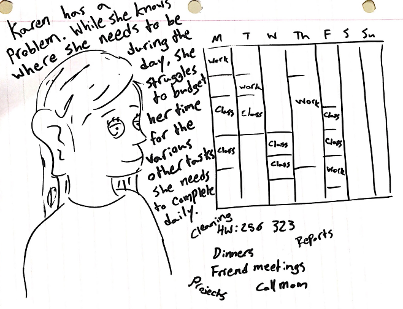

FlexAble
The Problem
College can be a constant struggle for many students. Between classes, work, social lives, and even just getting sleep, there are many places in their lives where students feel they could be more successful. We wanted to design an app or website that could help students reach the success they strived for and help them in their daily lives.
Our Team
 |
 |  |
| Cris | James (me) | Dara |
My Role:
- User Research - Initial Interviews, Affinity Diagramming, Usability Testing
- Ideation - Product Conceptualization, Storyboarding
- Design - Wireframing, Design Revision
Our Goals
- Talk to real college students to get a picture of what success means to students.
- Determine what challenges students face in being successful.
- Create an app to help narrow the gap between students and their success.
The Process
Interviews

Our first step in designing our product was learning more about how students defined success and what struggles they faced in achieving it. We interviewed 13 students of varying classes, genders, and other demographics in hopes of getting many different definitions of success.
We asked 6 main questions during our interviews, and asked probing questions from there based on responses:
- How do you personally define success?
- When you envision a successful person, what do they look like?
- What are some challenges you faced in your first semesters of college?
- How did you resolve those problems?
- What tools do you use to achieve success?
- What are the most important things you've learned as you've gone through college?
From there we gathered our insights into an affinity diagram. This broke down our findings into easier to understand categories and helped us sort out what bits of information would be the most applicable to our project goal.

What We Learned
After looking at the results from our interviews, we determined that students generally defined success as a balance of work, social, and academic life.
We also found that students most often found themselves stressed and overwhelmed when faced with a lack of structure in their day.
Using these findings, we crafted our Problem Statement:
Not only did we use what we learned from the interviews to identify our problem, we also used it to craft a persona of what our target user was.
Persona: Daniel
Image Source: http://www.auto.edu/wp-content/uploads/2014/12/ati-student-housing.jpg
- Age: 19
- Class: Sophomore
- Major: Physics
- Occupation: Student/Sandwich Artist
- Key Traits: Hard-Worker, Ambitious, Disorganized, Social
Daniel is a hard-working student in his sophomore year at Purdue University. He started off his college career studying Physics at Ball State in hopes of becoming a physics professor, but decided to transfer to Purdue because he wanted a more rigorous academic challenge.
However, Daniel severely underestimated just how challenging Purdue would be, and his course load needs him to commit a lot of time in the evening towards studying. He also had to take on a part-time job at Subway® in order to help alleviate some of his costs.
Daniel currently lives with 3 of his friends in a house near Chauncey, where they keep quite the active social lives. Daniel and his roommates like to host parties over the weekend, and often have friends over during the week to study (which most of the time turns into video games and socializing).
All-in-all, he’s a very busy guy, and he’s starting to drop the ball because he can’t find time in his busy schedule.
Ideation
Once we had a grasp of our problem and our users, it was time to begin coming up with solutions. Our initial ideation phase involved a lot of quick sketches notes of any idea that came into our head, and from there we refined things more and more until we came down to three main ideas.
Once we narrowed down our ideas, we created storyboards for different ideas.
Link Up
A scheduling app focused on connecting the user with other people who are invovled in the same activities to better coordinate things. Storyboard by Cris.
Energy Levels
An app that builds a schedule for you based on how much energy you have at that given time. Storyboard by Dara.
Smart Scheduler
A scheduling app that tracks how long you spend on tasks and adapts your schedule to best recommend times to complete tasks that aren't regularly scheduled. Storyboard by James.
|  | ||
 |
From here, we decided to move forward with the Smart Scheduler idea, which became FlexAble. At this point it was time to start building our wireframe.
The Product
I was primarily in charge of developing the functional prototype and wireframes, so I started designing FlexAble using Balsamiq, an online wireframing tool that allowed for easy drag-and-drop creation of functional wireframes and low-fidelity prototypes.
We brought this wireframe in to class to have it critiqued by several of our peers. We got a lot of good feedback, including:
- Change from weekly view to daily view on home page
- Reduce overall page complexity
- Scale the calendar properly
- Add "quit without saving" buttong to running events page
- Improve visibility of system status
- Have detailed profile only available through the event profiles page
- Move function buttons to bottom instead of top
We took these critiques to heart and made several revisions before taking the final working prototype to several students to test the prototype's usability. The final version is pictured below:


Usability Testing
We gave the prototype to 5 different students to run usability tests. We had several metrics we wanted to track while the users attempted to navigate a variety of scenarios in our app.
Primarily, we hoped to identify usability issues with our calendar event scheduler, starting and running events, viewing event details, and understanding the to-do functionality.
We also hoped to get some insight into how understated our app's functionality was. We worried during the design phase that users might struggle to figure out how things work without some guidance, so we wanted to see if the app was easy to understand without a tutorial or onboarding process.
We tested users in the following ways:
| Usablity Metric | Measurement Method |
|---|---|
| Task Success | Yes/No |
| Time to Complete Task | Seconds per Task, Average |
| Errors | Count per Task |
| Efficiency | Number of Clicks per Task |
We got a lot of good feedback from the usability tests. Suprisingly, responses were overwhelmingly supportive of the overall simplicity of the design, and many of the users grasped functionality very quickly. Our tests were not without negative feedback, though. Most criticism tended to stem from the following items:
- Page and button names were confusing and it was unclear what they did at face value.
- The difference between schedule items and events was unclear.
- Event sorting was a desired feature
- Many users wanted to control when an event starts, not have it run immediately on load.
- To-Do functionality was very unclear.
Several revisions were made in order to accommodate these pieces of criticism. We renamed Calendar Items to Events to better capitalize on user's pattern recognition of how other calendar apps name their event functions, and renamed Events to Tasks to better reflect their more passive nature.
We gave users more affordances on the running event screen in the form of start and pause event buttons, that way they could better control how the event ran.
We also made sure to make the To-Do page stand out more from the Event Profiles page by making the details found through the hidden dropdown affordance more relevant to the daily usage of the task, and by adding checklist and alarm symbols so that users can easily see if an event is complete or has an alert turned on.